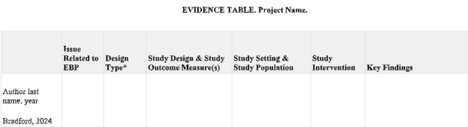
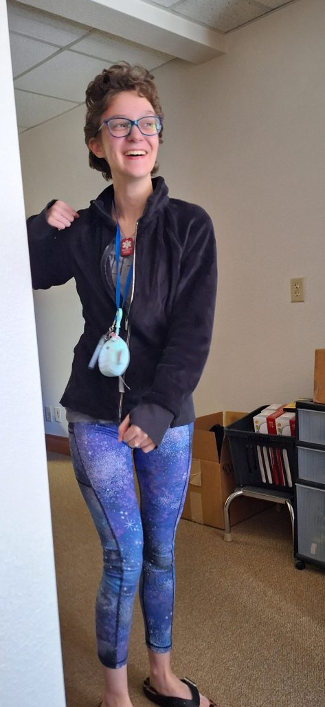

Internal Advisor: Trent McDowell
External Advisor: Shawn Bowker, Paula McAllister, & Floye Bradford
Internship Location: Northern Arizona Healthcare
People can die of uncontrolled hemorrhage in 5 to 7 minutes and is the leading cause of preventable deaths so it is important that the public knows how to control bleeding. That is what Stop the Bleed hopes to achieve. In this project, I will explore how prepared “Stop the Bleed” training program participants feel after completing the training.I have decided to address the effects of the training through a survey that will be emailed out to previous participants in the Stop the Bleed training. This will be able to assess a wide range of participants due to the accessibility of surveys. I will be participating in the data analysis, however, my main focus will be creating and sending out the survey. I will be partnering with Northern Arizona Healthcare where the team in charge of Stop the Bleed in Flagstaff is. By the end of this, I hope to contribute to a survey that will be used for a long time at the hospital.
February 21, 2024 12:00 pm
Hello! I am doing my senior project on the Stop the Bleed program. I have always wanted to do a senior project since I heard it was something you could do at BASIS. Even though I have always wanted to do one, I had no idea what I wanted to research until this year when the hospital offered seniors to help with their current projects. Out of the list of projects, the one that really stood out to me was the Stop the Bleed program.
Doing this senior project has also fueled my desire to go into the healthcare field that has been growing on me more and more as I research future careers as a senior. Some research includes going into a program outside of BASIS to explore options in the healthcare field and my upcoming internship with the hospital. The topics I learned in biology classes were just the surface of what I want to explore for the rest of my life as well as finally getting the chance to put classes to practical use like statistics which leads me to what I will be doing for this program.
The Stop the Bleed program is a program that teaches the general public to control bleeding. This program was initiated because bleeding is one of the leading causes of preventable deaths. The training includes how to put on various types of tourniquets, packing wounds, how to apply direct pressure, as well as when it is appropriate to apply any of these techniques. I will be creating and distributing a survey through this internship with Northern Arizona Healthcare with the goal to find how prepared the Stop the Bleed training participants feel after completing the training.
If you are interested, you can find more information in my senior project proposal
Here is a picture of where I will be working for my internship.
Northern Arizona Healthcare West Campus
Image Credit: Google Maps
February 27, 2024 12:45 pm
This week I finally completed my ethics training. It was pretty simple. All I did was read a paper and take a short quiz after. The mandatory modules I took were History and Ethics of Human Subjects Research, Informed Consent, Populations in Research Requiring Additional Considerations and/or Protections, Research and HIPAA Privacy Protections, and Assessing Risk. Of the electives, I took Data and Safety Monitoring in Human Subjects Research and Students in Research.
The first thing I worked on once I got to the hospital were these sign in sheets. Kei and I were given the task to write all the information that is given on the sheets. The categories included: name, title, organization, city/state, email, instructor, date, and course location. Some of these were not completed, but that’s ok. We added another category: page number. This is important because if any of the information is wrong we could quickly go back to the page and try to figure out the mistake. I am very grateful we made this system because there were more than 90 pages! The most challenging thing about this was just trying to read the handwriting. Most of the time I had to look back and forth between the name and the email to see if I could figure either one out. I am sure we got some wrong, but we can try to correct them when we send out the survey using the emails. Next time you sign up for something, you better make it legible.
This was next on the list. I had no idea what I was doing at first, but as the table got filled out more and more, I started to understand more. The formatting was so bad on a google doc, I had to move it to google sheets. I must say, it looked a lot better.
Here is a picture of the evidence table
Just last Monday, I was introduced to the website I will be using to creating the survey. Kei will be using it to analyze the results as they come in. At first, I was only thinking about writing two types of questions: free response and multiple choice, but once I was introduced to Surveymonkey, I realized there were so many options. I could do questions where you could answer on a scale from 1 to 10, a checklist, and a lot more. There is also something called logic. This allows me to make follow-up questions. For example if someone answers “yes” to a question I could follow up with the question “why”. This makes it so if the person answers “no”, they would never see the “why.” Although there may be a lot of restrictions because a lot of the options are blocked with the upgrade button.
I recently started to create some of the questions to the survey, just on a google doc, (not on Surveymonkey) and I am so excited to complete it and send it out!
March 6, 2024 12:00 pm
Throughout the week I have had various meetings. The first one on Wednesday was just a check- in to make sure we were on track and if there were any trouble. By the end, I gave them a rough draft of my survey questions. The next meeting was specifically for the survey, so we went through and they gave me a lot of useful edits. That was just one day. The next day I had a meeting with all the hospital project people about how to do interviews. This isn’t as useful because I don’t think I will be doing any interviews, but it was still very interesting and informative for later in life. I don’t go to the hospital over the weekend or on Friday so that was nice a break, but on Monday, I started with another meeting and there will be even more next week.
I underestimated how long this survey would take. I got a lot of feedback from the meetings and from my external advisor, so I fixed those. But wait there’s more! Kei just filled out another survey and got inspiration so we decided to add more questions and now we have to get that looked at too. Yesterday, we got more changes including getting rid of some questions. We sent out what we thought was the final survey, but we got an email saying we have to reduce it from 20 questions to 10 questions. It will be hard, but it’s possible!
We got our hospital laptops! If only they worked… trying to figure out how to log into the computers was stressful to say the least. After a week of struggling, we all called up the IT. She helped us reset the password and use the DUO app to get in. She was really nice, so the next time you call anyone to help you, you better be nice too! I will be using that laptop to send out the survey.
We then tried to do the IRB. I was motivated to do it until I couldn’t even log in. This time, there was no one to call so I don’t think I will ever get in.
See you next week!
March 13, 2024 2:46 pm
This past week, I really only worked on my project for about two days because of spring break, but I still learned a lot!
During the two days I worked, I mostly focused on IRB. Last week, I told you I had a problem with logging in and thought there was never going to be a solution, but at last, I got a username and password thanks to my external advisor. I didn’t even have to complete the IRB thanks to my trusty partner Kei, who did all the work for me while I was focusing on formatting an email and adding the final touches to the survey. It is very important to do an IRB with any research involving human subjects, so I was still put in as a co-investigator on Kei’s IRB form.
The second day was more IRB, but this time we had a meeting about it instead of figuring it out alone. A lot of what I learned in the meeting was in the CITI training I had to do a few weeks ago, but there were still things I didn’t know and were interesting to learn about. The most important points were the types of IRBs and the key principles. Here are some notes:
Full board:
Expedited:
Exempt:
Respect for persons
Beneficence
Justice
The email formatting struggles continue, but I won't get into that.
March 20, 2024 12:00 pm
There wasn’t much going on the past seven days because we were still on Spring Break, but I did things on Monday and Tuesday of this week.
On Monday, I learned a lot about excel in a meeting. We learned how to organize the data as well as summarize it by creating a table. I think the biggest thing to take away was to make a copy of the original and edit that because if you make a mistake, you can still go back.
I also had another weekly check-in meeting, but there was nothing much to note about it.
On Tuesday I finally finished the survey and it is almost ready to go out. The only thing we have to do is wait for the IRB to be approved. We already sent the email addresses and the email format to one of my external advisors, so when the IRB gets approved, they will send them out for real.
Dear recent participant of the Stop the Bleed Training Program,
We are pleased to invite you to participate in a survey about your experiences with the Stop the Bleed Training Program!
Your feedback is invaluable to us in enhancing the effectiveness of the program. The survey consists of 10 questions and should take no more than 3-5 minutes to complete. Your insights will help us identify areas for improvement and refine the training experience.
This research is part of a collaboration with BASIS Flagstaff High School and aims to enhance the Stop the Bleed Training programs in collaboration with Northern Arizona Healthcare. It is an integral part of the BASIS Senior Project experience, offering seniors the opportunity to conduct a research project during their final semester of school. More details about the project can be found in the attached Informed Consent document.
The deadline for completing the survey is one week from today.
If you have any questions regarding the survey or our research project, please feel free to reach out to us at research@nahealth.com.
***THIS SURVEY IS ONLY APPROVED FOR THOSE OVER 18, BY TAKING IT YOU ATTEST THAT YOU ARE AT LEAST 18 YEARS OLD***
Thank you for your time and consideration.
Warm regards,
Research Team and BASIS Project Seniors
March 27, 2024 12:00 pm
We finally sent out the emails! It was a lot more work than I thought it would be.
Kei and I had to group all the emails into 12 groups of 50 email addresses. We already typed up all the emails from the sign-in sheets into a spreadsheet the first few days we were here, so all we had to do was copy-paste 50 names at a time into a Google doc. The only problem was when I tried to copy the emails, it would copy the spreadsheet boxes as well, so I had to copy one at a time. After that was done, we sent the batches and the email (the one in my last post) to one of my external advisors and she sent them out through the company email.
After we sent the first 5 emails out (each with 50 people included), we realized that the link to the survey didn’t work. That was nice. We noticed the link was to a previous survey that was deleted and was quickly fixed by sending out another email including the correct link. After that, sending out the emails went smoothly.
After all the emails were sent, a lot of them bounced back. It could be that some of them moved to a new job/school (because a lot of people used work/school emails) or we wrote it wrong (because the handwriting was atrocious). I organized the emails that bounced back into a new document, so we don’t keep sending the survey to bad emails. After I had all the correct email addresses, I separated them into more batches of 50 for the second email to go out. Each time I make new batches, edit emails, or delete emails, I add all that information to the original spreadsheet that has the sign-in sheet information.
April 3, 2024 12:00 pm
The first part of the week, I was sorting emails…again. I did send out the first reminder email to complete the survey. You can read it below:
Subject: Friendly Reminder: Stop the Bleed Training Program Survey
Dear recent participant of the Stop the Bleed Training Program,
I trust this email finds you in good health. Just a quick reminder to kindly complete the survey if you haven’t had the chance to do so yet. Your feedback is highly valuable to us, and we truly appreciate your input.
click here to complete the survey
Thank you for your time and consideration.
Warm regards,
Research Team and BASIS Project Seniors
Guess what I did after that 🥲. More email sorting! Despite all my efforts more emails bounced back.
Some of you might be curious about the questions we are sending out to all the participants, so I have listed them below! The format might be slightly off though.
When was your most recent attendance to a Stop the Bleed class?
What is your position/title?
How helpful did you find the Stop the Bleed training? (1 means the least helpful and 10 means the most helpful)
1 2 3 4 5 6 7 8 9 10
How many times have you taken the Stop the Bleed training?
What was the most challenging part of the program to you?
What supplies did you buy anytime after the Stop the Bleed training program?
Do you practice your learned skills from the Stop the Bleed training course?
I am confident in my ability to perform the skills I learned
I understand my role as an immediate responder.
Have you ever had to apply any of the skills learned?
What’s the benefit of Stop the Bleed programming?
What do you think we could do better?
April 10, 2024 12:00 pm
I am kinda in a dry spot right now. I don’t have much to work on while Kei is analyzing the data. My project is about making the survey and Kei was more focused on analyzing after the results come in. You probably already heard it from Kei’s blog, but a total of 80 responses came in, which was more than I was expecting.
After Kei has fun with organizing and figuring out what she wants to do with the data, I can start reflecting on things I could do better on and things that worked well for my presentation.
Something fun I did while at the office was see the solar eclipse on Monday! It was really cloudy that day, but we got really lucky because it was not right where the sun was. I traveled to the parking lot with Kei and Sedona in tow and I tried my best to take a picture through the glasses (You still might need some glasses to look at it though):
Credit to Kei’s solar eclipse glasses.
I will be starting my final presentation. I will start by making the introduction, slide and the process of making a survey, and some of the important results. If Kei gets permission, I might be able to make a small card that has the most important information that they can take home with them. It will be front and back with information like when to use and how to use each type of tourniquet. I will also be looking up more articles about what makes a good survey. I will be researching this so I can really reflect.
April 17, 2024 12:00 pm
I had meetings to figure out more details about what to do next. Here are the main points:
A measurement tool needs to demonstrate test reliability, which is consistently producing results when used again and under similar circumstances. Interrater reliability is a measure of the consistency and agreement between two or more raters in their assessment, judgment, or rating of a particular study. The results of the measurement are numerical and expressed on a scale that ranges from -1.0 to +1.0 . A score of +1.0 indicates there was very high consistency and a score of -1.0 indicates low consistency.
In my case, the measurement tool that needs to be tested is which categories the open ended questions of the survey will belong to. Kei already made the categories and sorted them as a rater. I will be sorting the responses of the open ended questions into each category as the second rater. The categories are important to analyze the data and make graphs. I will list the open ended questions and the categories for each below (there are categories and subcategories):
I just heard that because Kei’s project and mine are similar and connected, we are able to do a joint presentation.
See you next time!
April 24, 2024 12:00 pm
You know it is going to be an interesting week when one of the first things you see in the morning is Kei and Nathan doing the Hokey Pokey. One of our external advisors also walked in when they were doing the dance, so, interesting to say the least. Its not a great photo, but it counts as evidence. Unfortunately, when I tried to take a picture of Nathan, I was blocked by Nathan’s hand, so no photo for him. As I write my blog, Sedona, Nathan, and Kei are yelling at me to add more about the Hokey Pokey but alas, I shall not disavow my convictions.
you take your elbow out~~
Btw Sedona came after, but tragically missed the whole thing.
Anyway, I finished putting the responses into categories. I am not sure how to put it into the number that is between -1.0 and +1.0, so we are going to have to deal with proportions and percentages for now. I will figure that out later this week.
When I was categorizing the responses, I thought the categories were very clear for the first question and the responses fit quite nicely. The second question was a bit more challenging because the categories seemed very similar and sometimes it felt the response could fit in two or more categories. It is taking a lot longer than I thought to compare the responses in my categories and the responses in Kei’s categories
While Kei was working on the content of her slides, I was working on finding a good template. It had to match Kei’s preferences, so it took ages. Other than that, the presentation slides are going great. Now all I have to do is copy the content and make small adjustments to the template I found so it looks good.
May 1, 2024 12:00 pm
We are almost done! Exciting yet sad at the same time. Getting ready for the presentation has been very stressful, but it has to be done so that is basically what I did this week and what I will be doing next week.
I had my weekly meeting that we have almost every monday. I like these because its at this time that most of the hospital project people come together. Although, these days, many of them have missed this meeting.
I went to the office and was working diligently on my inter-rater reliability , but then someone appeared and offered Kei and I another job. I was the incredibly important job that consisted of cutting paper tags. I mostly forgot what the tags were for besides the fact that they were for the blue wrap project and they are supposed to be included with every bag that is made of blue wrap. I have to say we were very productive and cut a lot.
I will say that I did eventually finish the inter-rater reliability
The first question had about 90 percent of our choices matching, which is pretty good. The second question on the other hand, did not do as well with a percentage of about 70 percent.
According to the book I read, 90 percent is strong agreement and 70 percent is moderately strong agreement.
We went to the place where we will be presenting and checked out the layout of the room, microphones, cameras, and how our slides would look like. All I can say is it made me more scared to present.
I got dragged to the hospital by Kei on Monday to practice our presentation after I was exhausted from the weekend before, but alas it was necessary. I think.
May 9, 2024 12:00 pm
The project is finally over! It felt like a long time, but now that it’s over, it didn’t feel that long. I’m just glad the presentation is over.
We were provided a nice office space to work and nice people to help us along the journey. It was fun and now that it’s done, I know that I would not want to do this in my professional life. It was good for a short period of time, but I don’t think I could keep it up through a longer period of time.
This was honestly more stressful than the presentation, but alas, I did it, and I.m doing it. You don’t know how thankful I am that this is my last one.
This was a lot more work than I thought it was going to be and while I expected a lot of edits, I wasn’t expecting the number of questions to go down by about half. This was my favorite part of the project besides transcribing all those rosters into a spreadsheet.
Just making the proposal involved a lot of writing and research, and meetings. I thought the meetings were not going to start until the third trimester, but to my surprise I started meeting for Stop the Bleed classes and introductions much sooner than the third trimester.When writing my proposal, I had to read a lot of research papers and I actually enjoyed reading them.
I would like to thank Northern Arizona Healthcare for allowing us to research and work here and then, I would like to thank my advisors:
Alejandra for teaching me all about Excel spreadsheets even though I didn’t use them on this project, it will come in handy later.
Julie for guiding me through SurveyMonkey.
Paula for giving us everything we need, organizing our project with basis, and sending out the survey emails.
Sedona and Shawn for teaching us about the Stop the Bleed program.
Mr. McDowell for his guidance in starting up the project and ending strong.
And finally, Floye for bringing it all together.
Here are my slides for the presentation and I was not able to link the survey due to other reasons, but the survey was my final product.